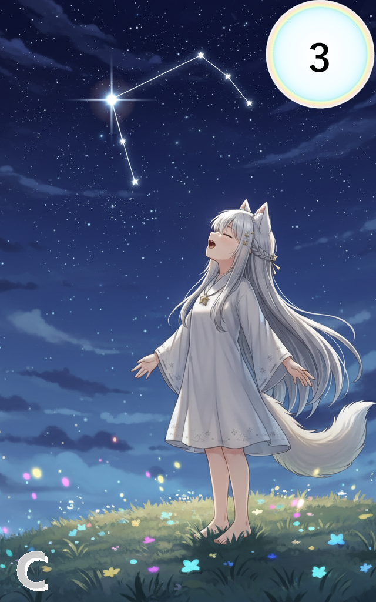

012_ワイルド・ハント

レアリティ: コモン (C)
ワイルド・ハント
クラス: ニュートラル
コスト:3
タイミング:エーテルエフェクト
効果:
《エーテルエフェクト》
このカードはチャージフェイズ中にエーテル変換した時のみ発動できる。
※エーテルエフェクトは1ターンに1度しか発動できない。
場の複数のアルカステラを選ぶ。
各対象に1d6+3のダメージを与える。
《エーテルエフェクト》
このカードはチャージフェイズ中にエーテル変換した時のみ発動できる。
※エーテルエフェクトは1ターンに1度しか発動できない。
場の複数のアルカステラを選ぶ。
各対象に1d6+3のダメージを与える。
夜空に「狩人」の星座が昇る時、星々の猟犬が放たれる。
その牙と定められたが最後、獲物たち（アルカステラ）は逃れる術を持たない。